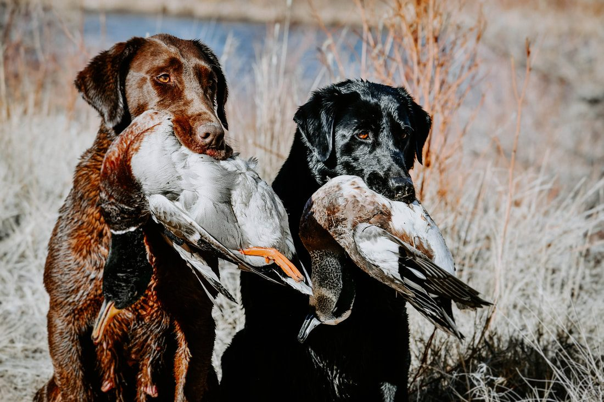
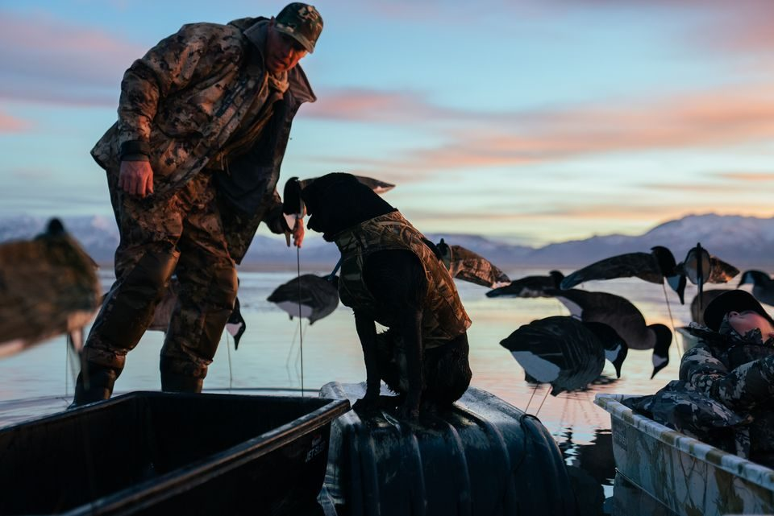
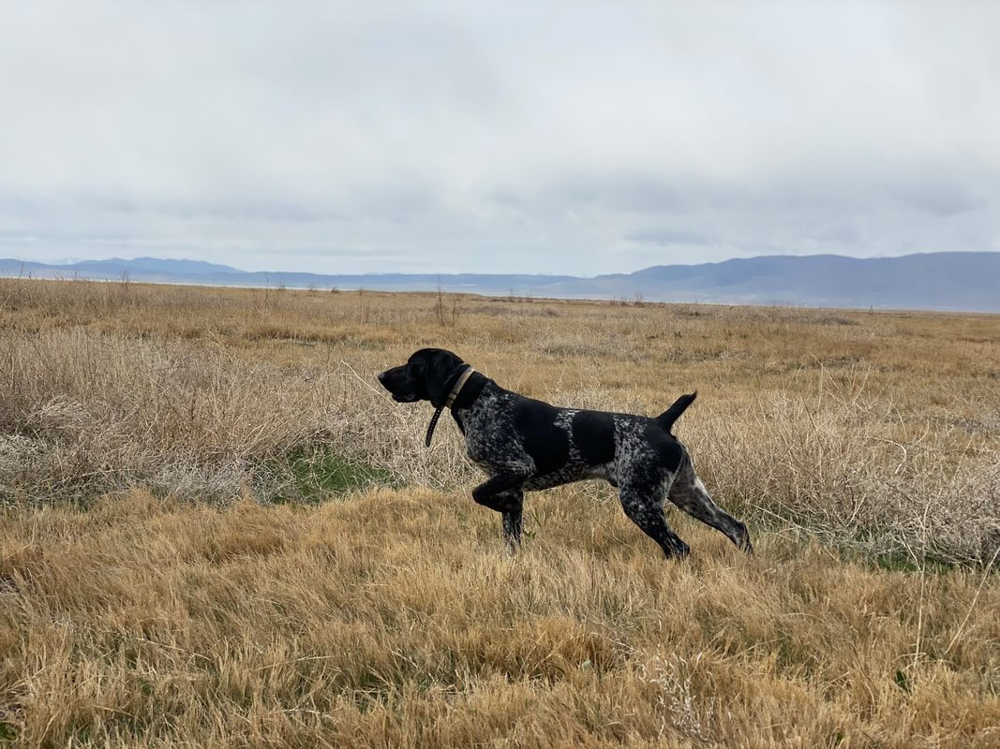
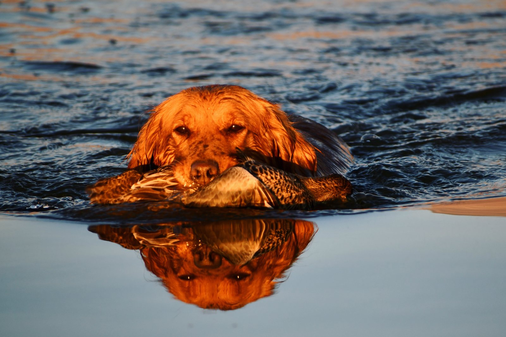

In many cases, a gun-shy dog can make significant progress and may be able to return to hunting, but there is no honest way to guarantee that every dog can be completely cured.
How well a dog responds depends on several things: how severe the fear is, what originally caused it, the dog’s prey or retrieving drive, and how patiently the dog is reintroduced to gunfire.
I’ve worked with dogs that made very good progress in about a month of consistent training. I’ve also worked with dogs whose gun issues were severe enough that the process took several months.
The biggest thing I tell owners is this:
The process needs to be gradual, positive, and based on what the dog is telling you.
First, make sure the dog really is gun shy
When someone tells me, “My dog is gun shy,” the first thing I ask is: What happened?
I want to know what experience made the owner believe the dog has a problem with gunfire.
Did someone take the dog to a shooting range?
Did they take a young dog hunting and shoot directly over it?
Did the dog have a bad experience with fireworks or another loud noise?
What did the dog do when the shot went off?
One misconception is that a gun-shy dog will always run away. That’s not true.
A dog may stay right beside its owner and still have a serious problem with gunfire.
What I’m really looking for is a change in the dog’s normal demeanor or behavior.
A dog may be showing gun-shy behavior if it:
- Runs away or heads back toward the truck.
- Stops hunting after a shot.
- Stops ranging away from the owner.
- Begins walking behind or directly beside the handler instead of working the field.
- Stops retrieving.
- Loses interest in birds.
- Becomes unusually quiet, tense, or still.
- Seems more concerned with the sound of the gun than with the activity it was previously enjoying.
If I’m watching a dog work around gunfire, I don’t just ask whether the dog stayed nearby. I want to see whether the dog is still being itself.
Is it happy? Is its tail moving normally? Is it retrieving? Is it hunting? Is it interested in birds? Is its energy the same?
That’s the standard I use.
Don’t “test” a dog to see if it is gun shy
One of the biggest mistakes I see hunters make is taking a young dog out and shooting around it just to see what happens.
They’ll say they want to “check whether the dog is gun shy.”
The problem is that the test itself can create the gun-shy behavior.
People get excited. They have a new hunting dog and want to get it into the field as quickly as possible. They throw a bumper, shoot a gun, or take the dog hunting and fire over it without first building a positive association with gunfire.
Sometimes the dog handles it. Sometimes it doesn’t. And when it doesn’t, an experience that lasted only a few seconds can create a problem that takes weeks or months to work through.
I would much rather introduce gunfire slowly and build confidence than find out the hard way that we moved too quickly.

How I start working with a gun-shy dog
When possible, I like to begin with something the dog already finds extremely positive. For most hunting dogs, that means birds, retrieving, prey drive, and movement.
Movement is important because it gives the dog something active to do and can help relieve stress.
With a Labrador or another retrieving breed, we may start by getting the dog excited about retrieving. With pointing breeds, we often use birds.
For example, we may take a pigeon, remove the flight feathers, tease the dog with the bird, and throw it for the dog.
At this stage, there is no gunfire.
I first want to see that the dog is genuinely excited. It may retrieve the bird. It may mouth it. A pointing breed may chase it or show intense interest.
What matters is that the dog is highly engaged and that the bird has become a very positive experience. We may work on this for several days before adding any gunfire at all.

Then we introduce gunfire at a distance
Once the dog is showing strong interest in the bird, we’ll bring in another person to handle the gun.
That person starts far enough away that the shot is barely noticeable to the dog. We also point the gun away from the dog.
The dog is already thinking about something positive—the bird. When the bird is thrown, we may fire the shot near the top of the bird’s arc. Then we watch the dog.
Did the dog continue after the bird? Did its energy stay high? Did its demeanor change? Did it suddenly become more interested in the sound than the bird?
If the dog continues happily retrieving or pursuing the bird without showing concern about the gunfire, we can gradually work the gun closer over time.
Eventually, the goal is to be able to fire close to or over the dog while the dog continues working happily and shows no negative change in behavior.
What we’re trying to build is a relationship in the dog’s mind: Birds are positive. Hunting is positive. Gunfire is part of that same positive experience.
- 1Positive activity
- 2Distant gunfire
- 3Watch demeanor
- 4Move closer only if the dog stays happy

The dog determines the timeline
There is no rule that says a dog should move to the next stage after three days, seven days, or any other fixed amount of time. The dog’s behavior determines when we progress.
If the dog remains happy, driven, and engaged, we can slowly move forward. If the dog’s energy drops, it stops retrieving, it stops hunting, or it begins focusing on the gunfire, we’ve gone too far.
At that point, we back up. That might mean moving the gun farther away again. It might mean returning to an earlier stage of training.
The goal isn’t to force the dog through a predetermined program. The goal is to keep the dog below the point where fear starts taking over.
What if birds and retrieving aren’t enough?
Some dogs come to us with gun shyness already deeply established. Others have some bird drive, but the fear of gunfire is stronger.
I’ve worked with dogs that did very well while the gun was far away, but once the shooter reached around 30 or 40 yards, the dog would begin shutting down. We could get the dog to a certain point, but we couldn’t break through that wall.
Situations like that are one of the reasons I created Gunshy Fix.
Gunshy Fix uses calming music and gradually introduces the sound of gunfire into that music. Instead of beginning with a loud gunshot, the dog starts in a calm environment with a soundtrack designed to be comfortable. Gunfire is then introduced progressively through the lessons.
The goal is to help change the dog’s association with the sound before asking it to deal with live gunfire again in the field.
How the Gunshy Fix progression works
With a dog that already has a significant gun issue, I recommend starting with the first Gunshy Fix lesson and playing it at an average, comfortable volume. Then watch the dog.
The dog should be able to eat, play, retrieve, relax around the home, or go about its normal activities without its personality or demeanor changing.
Once the dog is completely comfortable with that lesson, you can move to the next one. Then you repeat the same process. You continue progressing through the lessons only as long as the dog remains relaxed and behaves normally.
Eventually, the final lesson contains gunfire without the calming music.
If the dog begins showing concern at any point, go back to the previous lesson. Stay there until the dog is completely comfortable again. Only then should you move forward.
The dog determines the pace.
Why simply playing loud gunshots is different
Some owners hear the word “desensitization” and assume it means exposing the dog to a lot of gunfire until the dog eventually gets used to it. That’s not the approach I recommend.
Taking a gun-shy dog to a shooting range, tying the dog nearby, or repeatedly firing close to the dog can begin at an intensity that is already far above what that dog can comfortably handle. If the dog is frightened during those repetitions, you may simply be reinforcing the fear.
Proper desensitization should start at a level the dog can tolerate comfortably and progress gradually. The dog’s demeanor tells you whether you’re moving at the right pace.
How long does it take to fix a gun-shy dog?
There isn’t one answer for every dog.
A dog with average to above-average prey drive that is worked consistently may make very good progress within about a month. In our training program, we’re typically working dogs Monday through Friday, which gives us a lot of repetition and consistency.
A dog with lower drive or a severe history of gun-related fear can take several months.
That’s why I caution owners against setting a deadline. Watch the dog instead of the calendar. Trying to rush the process because hunting season is approaching is one of the easiest ways to undo progress.
Can a gun-shy dog relapse?
Yes.
Even after a dog appears to be doing well, I recommend continuing to create positive experiences around gunfire.
If we’ve worked a dog successfully through its gun issues, I don’t want the owner to avoid gunfire for six months and then suddenly take the dog hunting and shoot directly over it.
Continue layering positive gunfire experiences into the dog’s life. Take the dog out regularly. Keep the exposure positive. Keep watching the dog’s attitude.
Over time, we’re trying to make that positive association with gunfire more and more established.
When should you get a professional trainer involved?
Working a dog through live gunfire can require more than most owners have available. You may need:
- Birds.
- Suitable training property.
- A safe place where firearms can legally be used.
- One person handling the dog or throwing birds.
- Another person operating the gun at the correct distance.
- Someone experienced enough to recognize subtle changes in the dog’s body language.
If a dog already has severe gun-shy behavior, I often recommend starting with Gunshy Fix at home. Once the dog is comfortable working through all of the lessons, a professional trainer can help transition the dog back into birds and live gunfire. When that setup is the limiting factor, see When Does a Gun-Shy Dog Need Professional Training?
For some dogs, that combination works better than expecting an owner to reproduce an entire field-training setup by themselves.
Can every gun-shy dog be cured?
I don’t tell owners that.
I don’t guarantee that every gun-shy dog can be completely fixed.
What I can say is that I’ve seen dogs make significant progress when owners are patient, the dog has some retrieving or prey drive, and the process is approached correctly.
When someone calls me feeling like they ruined their dog because they introduced gunfire too quickly, I explain the options we have available. Then we start working the problem.
Some dogs respond relatively quickly. Some take a long time. Some may never become exactly the dog the owner originally imagined.
The goal is to use everything available in our training experience and knowledge base to give that dog the best chance possible.
The most important thing to remember
If your dog is already showing signs of gun shyness, more gunfire is not automatically the answer.
Slow down. Pay attention to your dog’s demeanor. Build positive experiences first. Introduce sound gradually. If your dog’s behavior changes, back up.
And don’t measure success by whether the dog simply stays beside you while shots are being fired.
You want a dog that can hear gunfire and continue being the same happy, confident dog it was before the shot.
That’s the goal.
Start with Gunshy Fix
Gunshy Fix was created as an at-home way to gradually introduce or reintroduce dogs to the sound of gunfire.
The program combines calming music with progressively introduced gunfire, allowing you to work through each lesson at your dog’s pace before transitioning back to live field training.
If your dog is already struggling with gunfire—or you want to introduce a puppy to gunfire gradually—learn how the Gunshy Fix program works.